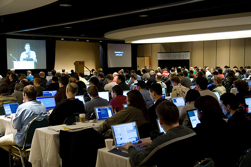

PyCon 2008, Chicago, USA

PyCon 2008 has been absolutely amazing this week. The talks I've seen and the people I've met have been a real inspiration, and my head is a-whirl with ideas. Above all, as always, I'm impressed by the Python community's genuine warmth. Maybe it's just a function of Python being relatively small compared to some other technologies, but there's something pleasantly hippy (in a good way) about its practitioners. Guido, for example, unsurprisingly turns out to be eminently reasonable and affable, and the IronPython team, to whom I and Resolver owe so much, are a thoroughly pleasant and interesting bunch.
To the people who have been asking for my humble talk slides, you can grab them here in a couple of formats:
- The slides as Open Office (tuned for Linux fonts, but more-or-less fine on Windows): TddBrooksSilverBullet.zip (103kb)
- The slides as PDF (fonts 100% good for everyone, but I think the various animations are gone:) TddBrooksSilverBullet.pdf (162kb)
- The accompanying source code: TddBrooksSilverBullet-src.zip (536kb)
If anyone has any outstanding thoughts or questions about the talk, I always love to chat, so please feel free to email me, tartley at the domain tartley.com (gosh I love love love http://spamarrest.com.) (Update: email obfuscated - spamarrest is no more.)
Update: There are photos!